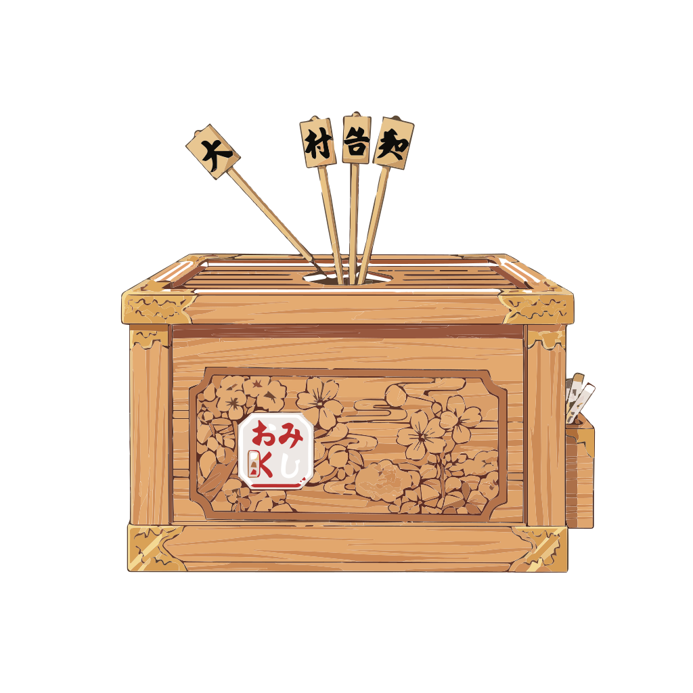

おみくじ
???
(??? | ???)
??
èªã¿: ???
意味: ???
縁
データエラーが発生しました。
Data error occurred.
↓リンクã¯ã¾ã ã§ã™ã€‚開発ä¸ã§ã™ï¼ï¼ã”ã‚ã‚“ã
↓The link isn’t ready yet — it’s still in development!! Sorry about that.

Let’s study together!
Short lessons + notes inside.
Follow this account too 👇